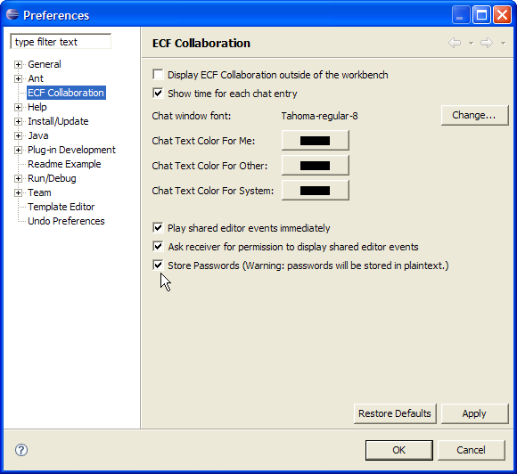

|
0.7.0: Added Graphshare Example Back into Build/Update Site
|
Added build/deploy of graphshare example application (real-time shared manipulation of EMF and GEF
graphical model). See download page
|
|
0.7.0: Added Call API feature and included call API plugin in ECF SDK
|
A new experimental API for doing VOIP call setup has been introduced in plugin org.eclipse.ecf.call. This API is still under development,
and no provider implementations yet exist that implement the ICallContainer entry point adapter interface. The initial API is being released to
get community feedback to guide the further development of the API and the selection/ordering of provider implementations.
See the javadocs for the
org.eclipse.ecf.call, and the
org.eclipse.ecf.call.events
Please provide any thoughts/comments/feedback to either the ecf-dev@eclipse.org mailing list or the eclipse.technology.ecf newsgroup.
For access to these forums see here.
|
|
0.7.1: Added org.eclipse.ecf.server plugin
|
Added new server plugin org.eclipse.ecf.server. This new plugin allows the running
of an ECF generic server within the Equinox Incubator under 'Embedding in Servlet Container' .
When started by the Equinox platform (via console), the org.eclipse.ecf.server plugin reads the conf/server.xml
configuration file and starts the specified servers listening on the specified ports. Currently the ECF generic server at
ecftcp://ecf.eclipse.org:3282/server is run in this manner.
|
|
0.7.2: Fixes for IRC provider spontaneous disconnects
|
IRC provider available available here was having problems with spontaneous client disconnects
caused by a mishandling of certain IRC events
|
|
0.7.3: New Workspace Connect Dialog
|
New connect dialog for workspace connect:

|
|
0.7.3: Connect dialog optionally remembers password
|
Connect dialog will optionally remember password and store as user preference.
This is disabled by default, but to enable password storage go to Window->Preferences...->ECF Collaboration. NOTE: If enabled,
passwords
stored in cleartext in preference store and so should not be considered secure:

|